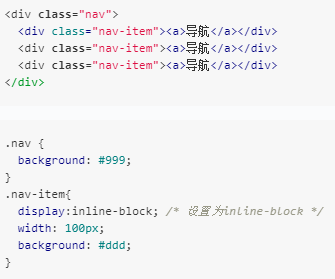
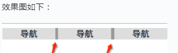

Web前端之旅之初识html~_~
什么是html?
- HTML 就是文档，万维网的雏形是一个文档共享系统（ 现在的万维网则是一个资源共享的网络，包括图片、多媒体等等），万维网就是一个放大版的文档共享系统， HTML 的本质其实是文档（document）。
- html--->超文本标记语言(hyperText markup language)，html并不是一种编程语言，它只是一种计算机语言，不具备像c/c++/java等编程语言中的变量或者函数等东西， 它仅仅由标签组成，标签名均由一对尖括号<>来包住 ---> <html></html>
- 由于html并不是编程语言，没有编译过程，所以我们可以用任何可以写字的软件比如txt来编写，一般使用sublime、vs code 等编辑软件来编写前端程序。在网页中所有的文字 图片和组织架构都是由html来编写的，当然html能够完成的工作不止有这些。
- 前面我们提到过html语言里面的都是标签，而html这个标签则是根标签，其他的东西都要放在这个标签里面编写，次一级的两个结构是head标签和body标签，head是给浏览器看的，body是给整个页面的主体 部分，我们其他的展示出来的东西一般都放在body标签下面。 ---> <head></head><body></body>
- 这个时候有一个问题，我们输入英文是没有问题很正常的显示，但是中文就会变成一堆乱码，这是由于此时的浏览器还不识别中文字符，我们还需要加一些东西，设置编码格式。
- head标签里的<meta>标签是用来设置编码格式的，我们在head标签中添加一个meta标签，注意这个标签不需要写闭合标签，然后我们为meta设置一个属性chatset=”utf-8″ ---> <meta charset="utf-8"> 其实meta还有很多其他的用处，比如设置移动端的页面显示大小，为网页被搜索的时候设置关键字等等。
- 简短介绍一下编码集。编码集主要有gbk、gb2312、unicode、utf-8：gb2312是国标2312条，可以识别简中日韩等亚洲语言；gbk是国标扩展，可以识别繁体中文；unicode是万国码，世界各国语言都包括在内，现在的 unicode的升级版本是utf-8（unicode transformation format），公用的是这个编码格式，可以识别所有的语言，所以前面三个基本不用。
- head标签里面的另一个标签<title>: 是用来改变页面的标题的，每一个网页都有自己的名字，这个名字就是通过title标签设置的。
html中的标签
- html中的标签数量是很多的，据人统计大概有300个左右，并且每年都会以20-30个的速度增加着，但是这么多的标签我们不必都去记住，因为很多标签都是不常用的或者可以用基础的标签搭配组合，实际上我们需要掌握的 大概在30个左右。在前端开发中，并不是你用的技术多么先进就显得厉害，需考虑到代码的可读性以及后期的可维护性，用常见的标签来写才会让其他人都能读懂你的代码。
- 顺便一提：代码中养成写注释的习惯，方便自己方便他人，在html中的注释形式是 ---> <!-- 注释内容 -->
- 注：这里的标签都是属于html4中的内容，html5会有新的标签和新的内容，在后面的文章中再加入。
几个基础标签
-
p 标签
<p></p>是段落标签，在其中间写的内容会当做一个段落来处理，p标签的特点是独占一行，并且段落上下都会有一定的间隔距离。
-
h1-h6 标题标签
标题标签的作用是着重显示文字，一般用在标题上，它会将里面的文字加粗放大并且独占一行，其中h4的默认大小是正常的文字大小，不过是加粗的，大小从h1到h6逐渐降低。
-
strong 标签
<strong></strong>其作用是将里面的文字加粗处理。
-
em 标签
<em></em>其作用是将里面的文字变成斜体。
-
del 标签
<del></del>该标签是删除标签，它会在里面的文字的中间画一条横线，一般在打折的时候使用。
-
address 标签
<address></address>该标签是地址标签，它会将里面的内容变成斜体并且独占一行。
结构化标签
结构化标签没有特殊的效果，一个作用是用来当做容器来盛放其他的标签；结构化标签还有另外一个作用就是用来为里面的子元素设置样式。一般的元素如果某一条属性没有被开发者设置 样式的话，它会自动继承父级元素的相应属性的样式。这两点作用是最常见的，因此我们在写一个页面之前，最先考虑的就是结构问题，因此一般先写结构化标签。
常见的两个结构化标签
-
div
<div></div>可以说是我们在前端开发中用的最多的标签了。若里面内容为文字则文字会在这个div标签的边界处自动换行，即div标签圈定了一个范围，里面的文字或者其他标签都 默认在这个范围里面显示。
-
span
<span></span>标签里面多数情况下盛放文字或者小icon之类的小物件。
文字分隔符与编码集
当我们在div里面书写的不是中文而是一串英文字符的时候，我们会发现这一串英文字符在div的边界处并没有换行，而是一直显示下去，这是为什么？
这是因为我们的每一个汉字，计算机都会认出来是一个单独的单词，每一个汉字都会默认地和其他汉字分隔开，但英文字母却不会默认地分隔开，因为计算机不知道多少个英文字母才算是 一个单词，因此我们需要手动为其添加分隔符。而这个分隔符就是我们常用的空格，只要我们在这一串字符中间加几个空格，那么被空格隔开的字符就会被当做是一个单词从而与其他的单词 分隔开。
问题是：空格的作用是当做分隔符来使用，并不是我们所想的那种空白的一个格，那么我们怎么在html中写入空白格呢？
这里我们就要提到一个名词叫做编码集了。我们在书写html的时候，很多特殊的符号是无法写出来的，这个时候我们只能用编码来让浏览器识别我们所想的符号。编码的格式是&编码; , 千万不要忘记后面的分号哟~~
空格的编码就是 ,当我们写多个 的时候，在页面中我们也就可以看到多个空白格了。
用来当做标签的尖括号<>也无法正常通过符号来显示出来，同样需要用编码集让浏览器识别出来。<的编码是<; 同理，>的编码时>; 我们只要在html中写这两个编码，那么就可以正常显示出来了。
回车也是属于分隔符，在html中回车是没有作用的，我们需要一个叫做<br>的标签，其作用就是换行。w3c标准中提到：br标签是空标签,意味着它没有结束标签，因此这是错误的：<br></br>, 在 XHTML 中，把结束标签放在开始标签中，即<br>
一些重要标签
-
ul li
无序列表，每个子项前面的序号都变成了点（•）
ul有一个type属性，这个属性的值设置的是每一个子项前面显示的符号的形式，默认的值是disc圆点，当值是square的时候，前面显示的就是小方块，值是circle 的时候前面显示的就是空心圆圈。
无序列表一般用来当做导航栏之类的且里面的结构样式都一样的部分，如淘宝等网页的导航栏就都是用ul、li来写的。
-
ol li
有序列表，每个子项的前面都会带有序号。
1.ol有一个type属性，这个属性的作用是用来设置每一个子项前面的显示内容的。默认情况下按照数字来排序的，我们可以改成type="a" ，这样前面序号是按照小写字母来排序的。同样的，type的属性 值还可以设置成A–>按照大写字母来排序；i—>按照i的个数来排序（罗马数字？）；I—>大写I的个数来排序，除此之外，设置成其他的属性都是错误的，而错误的情况下ol会按照默认的数字来排序，2和b等 都算是错误的值~
2.ol的第二个属性叫做reversed属性，当我们给ol加上reversed="reversed"的时候，子项就会变成倒序来排列。
3.ol的第三个属性叫做start属性，这个属性让子项从第几个序号开始显示，当我们写start=”2″的时候，前面的序号就会变成2、3、4 而不是默认的1、2、3，字母也是同样的道理。
-
a （anchor锚点）
<a></a>是一个非常重要的标签，它有一个必须写的属性叫做href(hyperText reference 超文本链接)，里面写的是地址。
1.定点跳转指定的id的元素位置：这个用法需要在href中写上id的值<a href="#clickme">点击我跳转</a>，这样就会跳转到那个id是clickme的元素的位置。
2.超链接：在href中写一个本地的或者网上的链接，比如www.baidu.com ，这样我们点击的时候就会跳转到这个网页上去。
3.协议限定符：在href中可以写javascript代码，比如href=”javascript:while(1){alert(‘你中毒了’)}”，当写上这行代码的时候，点击这个a标签后浏览器就会一直弹出对话框。
4.通常在移动端都用a标签来调用接口，比如：href="phoneto:12234512345" 调用手机的拨号功能来拨打电话，像美团外卖之类的就是用的这个功能。
a标签默认的是蓝色字体且带有下划线，在页面初始化的时候通常习惯将a标签的颜色和下划线的默认属性去掉。
-
img
<img>是image图片的意思，它有一个必备属性叫做src(source)，src属性的值就是我们的图片的地址。
一般来说我们给src填写两种值：网上的链接和本地的链接
本地链接分为两种：相对地址和绝对地址。绝对地址通常是不用的，因为当文件上传到服务器上的时候，凡是用绝对地址写的链接统统都会失效的，因此我们选择相对地址。相对地址中 ../的 意思是返回当前文件的上一层目录 ，./的意思是当前文件所在的目录.
图片标签还有两个属性:
1.alt属性：图片占位符，即当图片因为网速或者链接错误等原因加载不出来时，就会显示alt里面我们设置的值。
2.title属性：图片提示符，即当我们鼠标移入图片的时候，在鼠标旁边会出现一个黄色的小方块来显示这个title属性里面设置的值。
-
table
<table></table>是一个三级结构标签，它要搭配<tr><td></td></tr>这两个标签一起使用才可以。
table是表格的意思，这个标签就是设置外层的表格，然后tr是表格的行，td是表格的数据单元，可以理解为列。
<table>
<tr>
<td></td>
<td></td>
</tr>
</table>
td还有几个属性：
1.cellpadding内边距属性，可以为每一个单元格都设置内边距，如cellpadding="10px"。
2.cellspacing属性，这个属性的作用规定单元之间的空间，当我们设置为0的时候就可以去掉边线了。
3.colspan属性，这个属性规定了这一个td占了几个单位，默认的一个td占一个单位，类似于excel中的合并单元格的作用。
现在一般都不用table标签了，这是一个结构化标签，以前用这个标签来给页面进行布局，但是现在我们直接用div + css来对页面进行布局。
那么为什么我们要弃用table标签呢？
说道这里我们就不得不提一下异步和同步的概念。在生活中，我们常说的异步是指顺序的干两件事情，比如先吃饭，再玩游戏；同步的意思是同时干。 但是在计算机领域中，异步指的是生活中的同步，同时加载的意思，同步则是生活中的顺序加载的意思。
table的缺点在于服务器把代码加载到本地服务器的过程中，本来是加载一行执行一行，但是table标签是里面的东西全都下载完之后才会显示出来，那么 如果图片很多的话就会导致网页一直加载不出来，除非所有的图片和内容都加载完。以前的手机网速慢，厂家重视内容的展现而不是样式的展现，所以那个时候用table，而现在网速很快，大家都重视用户体验，当我们浏览淘宝店铺的时候，如果要等到所有的图片全都加载完之后才显示出来的话那也太蠢了，所以table标签现在我们基本放弃使用了
一个非常重要的标签——表单
<form></form>这个表单元素可以让我们实现前端和后台的数据交互。通过form表单向后台发送数据，数据都是由两部分组成的：数据名+数据内容。
form表单元素拥有的属性：
1.action属性：填写服务器地址，这个属性的意思是把数据传递到那个服务器。
2.method属性：传输方法，在这里填写通过什么方式来传输数据，一般填写的都是POST/GET这两种中的一个，虽然有其他的方式但是用的很少，而post和get的区别我们在网络篇会有介绍，这里 我们暂时都先写get方法吧
表单拥有的子元素：
input：这个标签是一个单标签，不需要闭合。其有一个type属性，这个属性的值决定了这个input标签的类型是什么。
1.text：若type="text"，这个input标签就是一个输入框，可以在里面输入文字信息。
2.password：若type="password"，这个input标签就是一个密码框，在里面输入的文字信息都会以隐藏的形式展现出来。
3.submit：若type="submit"，这个input标签就是一个提交按钮，点击这个提交按钮后就会把整个表单的数据发送到后台服务器上了。
4.radio：radio是单选框的意思，若type="radio"，它就会变成一个圆点，我们可以选择这个圆点，但是我们写很多的单选框的时候，他们似乎都可以被选中，并没有单选的作用。这里是 因为我们还没有为这一组单选框设置名字，当我们给几个radio都设置了同一个name的时候，它们就会变得只能选择一个的单选框了。
5.checkbox：checkbox是复选框的意思，若type="checkbox"，和radio一样的道理，设置好数据的名字，可以同时选择很多的选项。
前面提到发送数据一定要有数据名和数据内容，数据内容就是给input标签设置的value属性的值，而数据名就需要在input标签里面写一个name属性来告诉浏览器这个数据的名字是什么了。
当在开发的时候，其实是需要为每一项属性都设置一个默认的值，如像sex这种单选框，设置一个默认值后，就会有一半的用户不需要去更改这个选项，极大地提高用户体验。
设置这个默认值的方法就是添加一个checked="checked"属性，在哪一个input标签里面设置了这个属性，那么哪一个选项就是默认被选择的状态。
下拉列表的标签<select></select>
<select>
<option></option>
<option></option>
<option></option>
</select>
下拉列表的name属性是写在select标签上的，里面option中间填写的内容就是默认的数据值，但若给每一个option都加一个value属性的话，那么option中间添加的文字则不作为传递数据 的值，而将value的值作为传递数据的值，同时下拉列表的默认选中的是第一个选项；若要改变默认选项的话，要添加的属性是selected="selected"而不是上面的checked。
标签的分类
行级/内联/行内元素--->disspanlay：inline标签代表有：a em br select span strong
特点是：不占满整行，元素所占空间完全由内容所控制；不可以改变宽高、行高、上下边距
块级元素--->display: block/table...标签代表有：div form h1-h6 p ul ol li table address
特点是：占满整行，无论内容多还是少;可以改变宽高、行高、上下边距
第三种标签--->inline-block这一类标签既不属于行级元素也不属于块级元素，它们既不独占一行，又可以随意改变宽高，如img/input标签。
显示类型display基本类型：none/inline/block/inline-block
flexbox：flex/inline-flex
grid：grid/inline-grid
table：table/table-row/table-cell
深入了解inline-block
水平间距问题
 以上效果图存在一些间距，为什么呢？
因为我们编写代码时输入空格、换行都会产生空白符。而浏览器是不会忽略空白符的，且对于多个连续的空白符浏览器会自动将其合并成一个，故产生了所谓的间隙。对于上面实例，我们在 列表 item 元素之间输入了回车换行以方便阅读，而这间隙正是这个回车换行产生的空白符。
如何消除空白符?
1）代码不换行。由于换行空格导致产生换行符，因此可以将上述例子中的列表 item 写成一行，这样空白符便消失，间隙就不复存在了。其代码如下：但考虑到代码可读及维护性，一般不 建议连成一行的写法。
<div>
<div>导航</div><div>导航</div><div>导航</div>
</div>
2）设置 font-size。首先要理解空白符归根结底是个字符，因此，可以通过设置 font-size 属性来控制产生的间隙的大小。若将 font-size 设置为 0，文字字符是没法显示的，那么同样 这个空白字也没了，间隙也就没了。顺着这个思路就有了另一个解决方案：通过设置父元素的 font-size 为 0 来去掉这个间隙，然后重置子元素的 font-size，让其恢复子元素文字字符。 使用该方法时需要特别注意其子元素一定要重置 font-size，不然很容易掉进坑里（文字显示不出来）。 所以该方法代码如下：
html5语义化
HTML是万维网的粘合剂，也是万维网的载体。HTML给人看的同时也给机器（如搜索引擎的爬虫和读屏设备）看，视觉上的各种炫酷会给人以视觉冲突，但对机器来说并没有什么用，它更看重 语义以便更好地解析内容，这也是为什么样式会从结构分离出来的原因之一。
HTML5 引入的语义化标签有header、nav、menu、section、article、aside 等
语义化这个概念应该说是伴随HTML5应运而生，那什么是HTML5中所谓的语义化呢？
简单来说就是：描述内容的含义
明确HTML5的核心思想就是语义，所以不管什么标签就看表达的意思，而不是看展现效果。
优点：1)方便团队开发和维护,与CSS3的关系更和谐；2)改进搜索引擎的优化，有利于SEO；3)屏幕阅读软件（盲人）会根据结构来读页面；4)可以提升可访问性与互操作性(兼容性会更好)； 5)一般来说可以让HTML文件更小。
顺便提一下：HTML5是 HTML 最新的修订版本，于2014年10月由万维网联盟（W3C）完成标准制定。而 IE8 面世时间为2009年3月19日，时间相差如此之大，所以 IE8 作为比较古老的浏览器， 不支持 HTML5 引入的语义化标签（如 header、nav、menu、section、article 等）也是很正常的。
虽然默认不支持，但是我们可以通过 JS 使用 document.createElement 来“欺骗” IE 的 CSS 引擎，让它知道某个标签的存在。既然元素默认都不支持，就更没有相关默认的样式了， 所以我们还要加上一些重置样式如下： article, aside, details, figcaption, figure, footer, header, hgroup, main, menu, nav, section, summary { display: block; }
其实除了IE8，IE 6-9、Safari 4.x（以及Iphone 3.x）、还有Firefox 3.x等等，对HTML5的支持都不完善。因此有了一个库html5shiv.js来做统一处理。